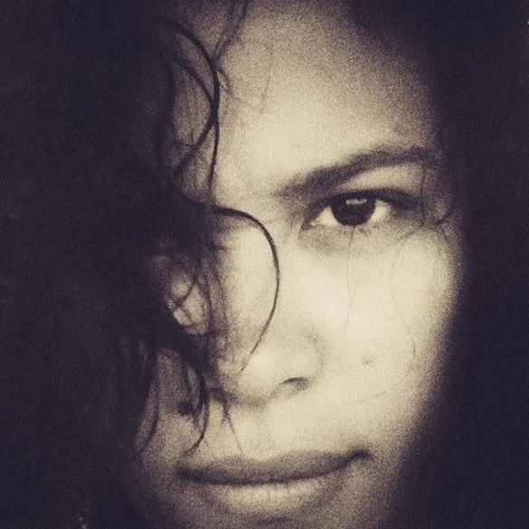
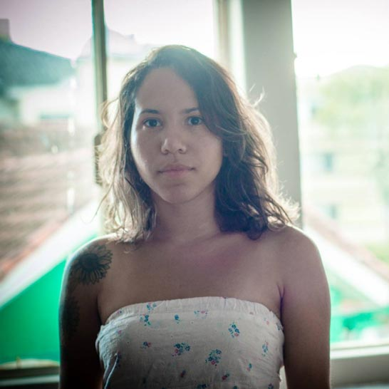

Funções / Produção executiva
As informações de cada perfil são de responsabilidade das profissionais.
Você quer conhecer profissionais de quais estados?
Marcar/Desmarcar todos
CARREGANDO ...
Aimée Regina (SC)
Aimée Regina
24 anos | São Paulo (SP)
aimee.rsilva@hotmail.com
Formada em publicidade pela Metodista, atualmente trabalho que como assistente de atendimento na Conspiração Filmes.
Outras atividades de Aimée Regina
Produção
Amostra de vídeo
 Camila Lima (RJ)
Camila Lima (RJ)
Camila Lima
23 anos | Rio de Janeiro (RJ)
camilalimasc@gmail.com
Sou formada em Produção Cultural pela UFF, experiência com audiovisual em dois projetos de curta metragem. Atualmente, trabalho em uma produtora de musicais. Gosto também de experimentar o lado da criação (escrevo em um blog meu), apesar de não ter muito tempo.
http://silenciososencontros.wordpress.com
Outras atividades de Camila Lima
Coordenação de projeto |
Produção
 Carem Abreu (MG)
Carem Abreu (MG)
Carem Abreu
46 anos | Belo Horizonte (MG)
caremabreu@gmail.com
Cineasta, jornalista e capoeirista angoleira. Atuo desde 1996 nos setores Audiovisual e de Culturas Populares como Pesquisadora, Gestora Cultural, Diretora, Roteirista, Produtora Executiva, de Elenco e de Set. Idealizadora da Mostra CineAfroBH.
ATUAÇÃO PROFISSIONAL: ATOS CENTRAL DE IMAGENS. youtube.com/user/atosimagens
Desde 2007: Produtora Executiva, Diretora e Roteirista Atuais 2015: produção executiva do filme e seriado CIDADE DO SOL (Ação, 2015MG, Guto Aeraphe) webseriados.tv (vimeo.com/ondemand/webseriecidadedosol).
PRÊMIO: novembro 2015 Edital de Intercâmbio do MINC > Oficina de Produção Audiovisual em DAKAR, Senegal, na Associação Batuk de Comunicação e Cultura.
http://www.mostracineafrobh.com
Outras atividades de Carem Abreu
Direção |
Exibição |
Ensino superior |
Oficinas e cursos livres |
Pesquisa e desenvolvimento |
Produção |
Roteiro
Amostra de vídeo
Danddara (SP)
Danddara
48 anos | Campinas (SP)
dandarah@rocketmail.com
Carioca, cresce no universo cultural do samba. Premiada no Brasil e EUA, se expressa através do cinema, música, literatura e arte florestal. Inicia a carreira em 1985. Em 1988 funda o Teatro Florestal do RJ. Começa no cinema em 1990, como Prod Exec do longa "Canto da Terra". Em 2000 dirige Gurufim na Mangueira (ficção, 26 min, 35mm) obra que insere a mulher negra como sujeito da narrativa cinematográfica ficcional. Revelada pela HBO/USA como primeira mulher negra cineasta do Brasil.
http://nossoclan.tumblr.com
Outras atividades de Danddara
Atuação |
Coordenação de Projeto |
Direção |
Oficinas e cursos livres
|
Pesquisa e desenvolvimento |
Programação e curadoria |
Roteiro
Amostra de vídeo
Deka Carvalho (SP)
Deka Carvalho
36 anos | São Paulo (SP)
kilometroprodutora@gmail.com
Sou Deka Carvalho, 36 anos, mãe, preta, favelada, produtora de videos e fotos. Sou responsável pelo audiovisual no estado da CUFA SP (Central Única das Favela de São Paulo) , sou proprietária da produtora Kilômetro na zona leste de São Paulo. Meu objetivo é mostrar o território favela no seu melhor contexto verdadeiro e nos colocarmos como protagonistas em todas as esferas.
https://www.facebook.com/kilometroprodutora/
Outras atividades de Deka Carvalho
Assistência de Direção |
Direção |
Direção de Arte |
Edição |
Exibição |
Pesquisa e desenvolvimento |
Preparação de Elenco |
Produção |
Roteiro
Amostra de vídeo
 Fernanda Araujo (SP)
Fernanda Araujo (SP)
Fernanda Araujo
35 anos | São Paulo (SP)
contato@amusicaria.com.br
Fernanda Araujo, filmmaker, formada em Rádio e TV pela Universidade Metodista desde 2004, especializada em Direção de Fotografia Avançada pela AIC. Atualmente trabalho como videomaker na empresa Salon Line, onde contribuo com a criação de conteúdos para internet e sou responsável pelo criação do conteúdo audiovisual da marca nas redes. Também realizo a produção executiva e/ou coordenação de alguns dos projetos audiovisuais da marca produzidos por terceiros.
Outras atividades de Fernanda Araujo
Captação de Som |
Coordenação de projeto |
Direção |
Direção de fotografia |
Edição |
Mixagem e efeitos sonoros |
Pesquisa e desenvolvimento |
Produção |
Roteiro
Amostra de vídeo
Jaqueline M. Souza (PR/SP)
Jaqueline M. Souza
30 anos | Curitiba (PR) e São Paulo (SP)
jaque.jmsouza@gmail.com
Jaqueline M. Souza é formada em Cinema pela FAP. Ganhou o Prêmio do Júri no 8° Curta Santos pelo videoclipe Dos Amores Mais Vendidos. Roteirizou a animação Julieta de Bicicleta, indicada ao Prêmio Brasil de Cinema Infantil, ao Prix Jeunesse Ibero Americano /ComKids e ganhadora do Prêmio de Público no Festival Divercine. Contribuiu com textos, curadoria ou mediações para mostras como Trilogia Flamenca, Ciclo Vicent Price e Tati por Inteiro, realizadas pelo Sesc Paraná. Em 2015, fundou a Tertúlia Narrativa, espaço colaborativo de criação e aprimoramento de roteiros. Em 2016, assinou a produção executiva dos curtas A Noite Púrpura e Meu Querido Camaleão, selecionado no Anima Mundi.
http://www.tertulianarrativa.com
Outras atividades de Jaqueline M. Souza
Oficinas e cursos livres |
Roteiro
Amostra de vídeo
Josy Macedo (CE)
Josy Macedo
35 anos | Fortaleza (CE)
josy.macedo@gmail.com
É graduanda em Cinema e Audiovisual pela Universidade Federal do Ceará. Possui graduação em Administração de Empresas; pós-graduação em Gestão de Organizações do Terceiro Setor; e pós-graduação em Gestão Pública Municipal. No âmbito da cultura, é produtora cultural desde 2005, quando iniciou a carreira como atriz e produtora teatral. No cinema, dirigiu o curta "Estamos Bem?", produziu os curtas "21m" e "Um Assunto Meio Delicado", o cineclube Cine Rebuceteio e também participou da produção da Mostra Cine Nordeste.
Outras atividades de Josy Macedo
Atuação |
Audiodescrição |
Cineclubismo |
Direção |
Direção de arte |
Oficinas e cursos livres |
Pesquisa e desenvolvimento |
Produção |
Roteiro
Amostra de vídeo
Lucinete Morais (GO)
Lucinete Morais
37 anos | Goiânia (GO)
moraislucinete1@gmail.com
Antropóloga e gestora cultural em formação como realizadora audiovisual.
http://web.facebook.com/moraislucinete
Outras atividades de Lucinete Morais
Captação de recursos |
Coordenação de projeto |
Direção |
Ensino superior |
Oficinas e cursos livres |
Pesquisa e desenvolvimento |
Produção |
Roteiro
Amostra de vídeo
 Naymare Azevedo (RN)
Naymare Azevedo (RN)
Naymare Azevedo
24 anos | Natal (RN)
naymaresazevedo@gmail.com
Naymare Azevedo, produtora executiva, gestora de políticas públicas e marketing cultural. Diretora criativa do Espaço Criativo Aayabá e coordenadora do projeto de formação criativa do AFROTONIZAR.
Outras atividades de Naymare Azevedo
Assistência de Direção |
Atuação |
Captação de Recursos |
Cineclubismo |
Coordenação de Projeto |
Direção |
Oficinas e cursos livres
|
Pesquisa e desenvolvimento |
Produção
Amostra de vídeo
Patrícia Bssa (BA)
Patrícia Bssa
33 anos | Salvador (BA)
patriciabssa@gmail.com
Bacharel em comunicação social e radialista, atua na coordenação e produção de arte e cenografia. Outras experiências em audiovisual: gestão financeira, contratação de fornecedores e serviços, logística, cattering, receptivo, produção de elenco, e produção de locação.
http://patriciabssa.tumblr.com/
Outras atividades de Patrícia Bssa
Cenografia |
Coordenação de Projeto |
Direção de Arte
|
Produção |
Amostra de vídeo
Sarah Pimentel (AM)
Sarah Pimentel
25 anos | Manaus (AM)
sarah.hc.pimentel@gmail.com
Técnica em Rádio e TV, Bacharel em Rádio, TV e Internet. Pós graduando em Gestão Cultural: cultura, desenvolvimento e mercado. Natural de Manaus/Amazonas. 25 anos. Produtora audiovisual e assistente de produção executiva; Experiência em roterização de programas de rádio e televisão. Produção de pautas televisivas, radiofônicas e jornalísticas. Produção de institucionais, documentários, programas e VT's publicitários. Noções de edição de imagem. Atuando também, no campo da fotografia e da produção cultural.
http://vimeo.com/sarahpimentel
Outras atividades de Sarah Pimentel
Pesquisa e desenvolvimento |
Produção
Amostra de vídeo
 Stella Zimmerman (PE)
Stella Zimmerman (PE)
Stella Zimmerman
54 anos | Recife (PE)
agirafilmes@gmail.com
Stella Zimmerman, sócia fundadora da Agira Filmes, estudou matemática na FFPP e vídeo na City and College em Londres. Desde o início dos anos 2000, trabalha como produtora executiva e diretora de produção. Em destaques alguns filmes: Amarelo Manga de Cláudio Assis, 2002; Eu vou de volta de Cláudio Assis e Camilo Cavalcante, 2007; Um lugar ao sol de Gabriel Mascaro, 2009; Febre do Rato de Cláudio Assis, 2011; A História da Eternidade de Camilo Cavalcante, 2012; Big Jato, de Cláudio Assis, 2014.
Outras atividades de Stella Zimmerman
Produção
Amostra de vídeo
 Tais Amordivino (BA)
Tais Amordivino (BA)
Tais Amordivino
25 anos | Salvador (BA)
contatotaisamordivino@gmail.com
Graduanda em Comunicação Social com ênfase em Cinema e Vídeo. Estudou direção de Cinema e Televisão na Escola Baiana de Cinema (EBACINE). Idealizadora do grupo "A Mulher Negra e o Cinema" criado em 2015. Em 2016 Dirigiu, roteirizou e produziu o documentário "A Invisibilidade da Identidade Negra na Educação", foi Assistente de Direção no curta-metragem "O Brinde" de Rubens Shinkai; Dirigiu, roteirizou e montou o curta-metragem "Caos"; Fez câmera no documentário “A Maestrina da Favela” de Falani Afrika (2016); Dirigiu “ A trajetória das Cineastas Baianas” documentário(2017).
Outras atividades de Tais Amordivino
Assistência de direção |
Assistência de fotografia |
Cinegrafia |
Direção |
Pesquisa e desenvolvimento |
Roteiro
Amostra de vídeo
Talita David (PR/SP)
Talita David
25 anos | Curitiba (PR) e São Paulo (SP)
talitadalu@gmail.com
Formada em Publicidade e Propaganda e com pôs graduação em Cinema, iniciei os meus primeiros trabalhos de produção ainda na faculdade em seguida fiquei a frente do marketing e distribuição da revista Café Especial que foi indicada consecutivamente para o "Festival International de La Banda Dessinée de Angoulême", atualmente atuo como diretora de produção na produtora Filmes de Perto, da qual estamos desenvolvendo o seu segundo longa metragem "Sul" pelo Fundo Municipal de Cultura de Curitiba e o longametragem "Oona e Matheus" que está em desenvolvimento pelo Prodav 03. Realizei também a produção executiva do documentário "Garatujas, Badamecos e Outros Monstros" que será lançado este ano.
Outras atividades de Talita David
Direção de Arte |
Produção
Amostra de vídeo
 Thais Scabio (SP)
Thais Scabio (SP)
Thais Scabio
39 anos | São Paulo (SP)
thaisscabio@gmail.com
Diretora, Produtora, educadora e cineclubista. Coordenadora dos projetos "JAMAC Cinema Digital" e " coletivo Mascate Cineclube", em São Paulo. Trabalha com cinema digital desde 2002. Graduada em Comunicação Social, Especialista em Direção de Cinema e Video pela ELCV de Santo André. Sócia-fundadora da produtora Cavalo Marinho Audiovisual, foi produtora executiva da animação "Graffiti Dança, ganhadora do prêmio de Melhor Curta Brasileiro do Anima Mundi 2013. Atualmente produz e dirige a websérie "Terror em um minuto" e esta em desenvolvimento de seu primeiro longa-metragem.
http://www.cavalomarinhoaudiovisual.com
Outras atividades de Thais Scabio
Direção |
Cineclubismo |
Oficinas e cursos livres |
Produção
Roteiro
Amostra de vídeo
 Thamires Vieira (BA)
Thamires Vieira (BA)
Thamires Vieira
23 anos | Cachoeira (BA)
thamiresvieirafjl@gmail.com
Thamires Vieira é realizadora audiovisual; membro do coletivo TELA PRETA, movimento de cinema negro, graduanda em Cinema pela UFRB, membro do Cineclube Mario Gusmão.
Outras atividades de Thamires Vieira
Assistência de Direção |
Cineclubismo |
Coordenação de Projeto |
Direção |
Pesquisa e desenvolvimento |
Programação e curadoria

Amostra de vídeo
 Thuanny Bruno Rodrigues Paes (SC)
Thuanny Bruno Rodrigues Paes (SC)
Thuanny Bruno Rodrigues Paes
22 anos | Florianópolis (SC)
thuannypaess@gmail.com
Thuanny Paes é atriz, militante e estudante cotista do curso de Licenciatura em Teatro da Universidade do Estado de Santa Catarina (UDESC). Entrou no então projeto de extensão Coletivo NEGA onde participou como bolsista por dois anos. Hoje é atriz e produtora do grupo que está no quinto consecutivo apresentando a performance Preta-à-Port Preta-à-Porter. e atua no projeto Diversidade em Escolas Públicas e EJAS nas redes municipais de São José São José e é menbro do MNU Jovem (Movimento Negro Unificado). Esse ano criou um canal no youtube pra falar sobre Cultura e Arte Negra e e pesquisa de forma livre as áreas de direção e roteiro audiovisual.